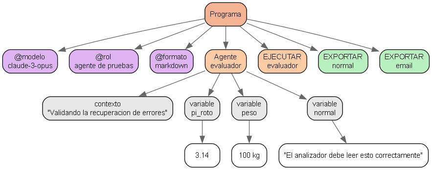

Programa
- Directiva @modelo = "claude-3-opus"
- Directiva @rol = "agente de pruebas"
- Directiva @formato = "markdown"
- Agente evaluador (línea 11)
- Contexto: "Validando la recuperacion de errores"
- Variable pi_roto (línea 15)
- Valor: 3.14
- Variable peso (línea 16)
- Valor: 100 kg
- Variable normal (línea 24)
- Valor: "El analizador debe leer esto correctamente"
- Ejecutar evaluador (línea 30)
- Exportar normal (línea 31)
- Exportar email (línea 31)